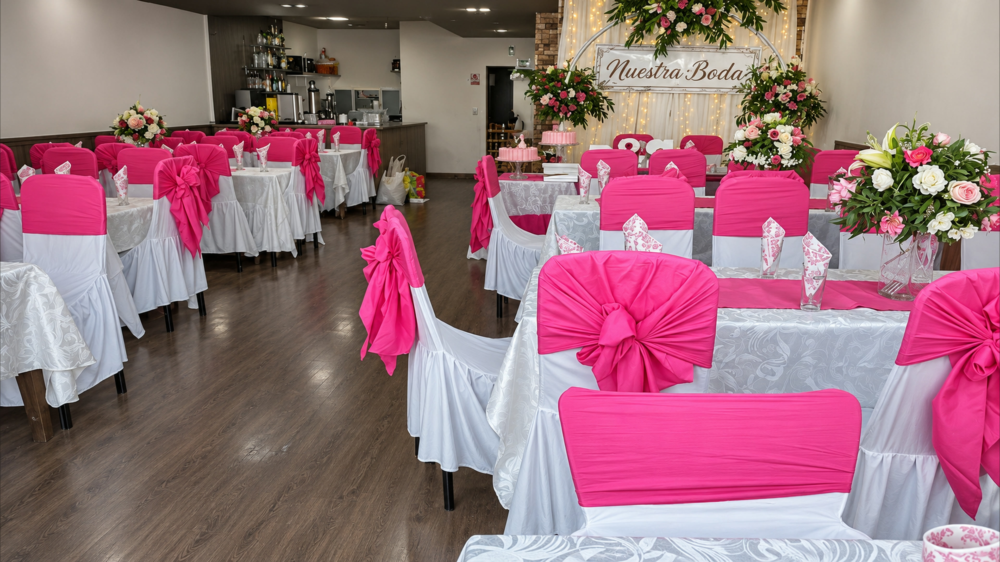
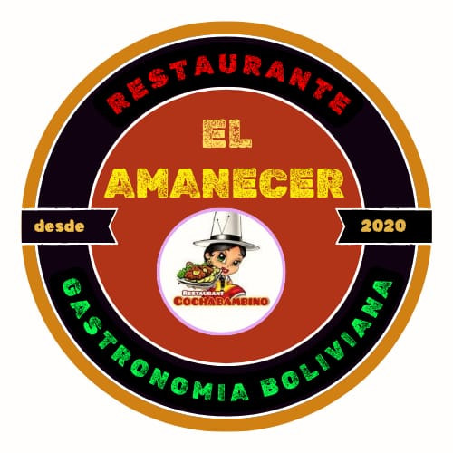
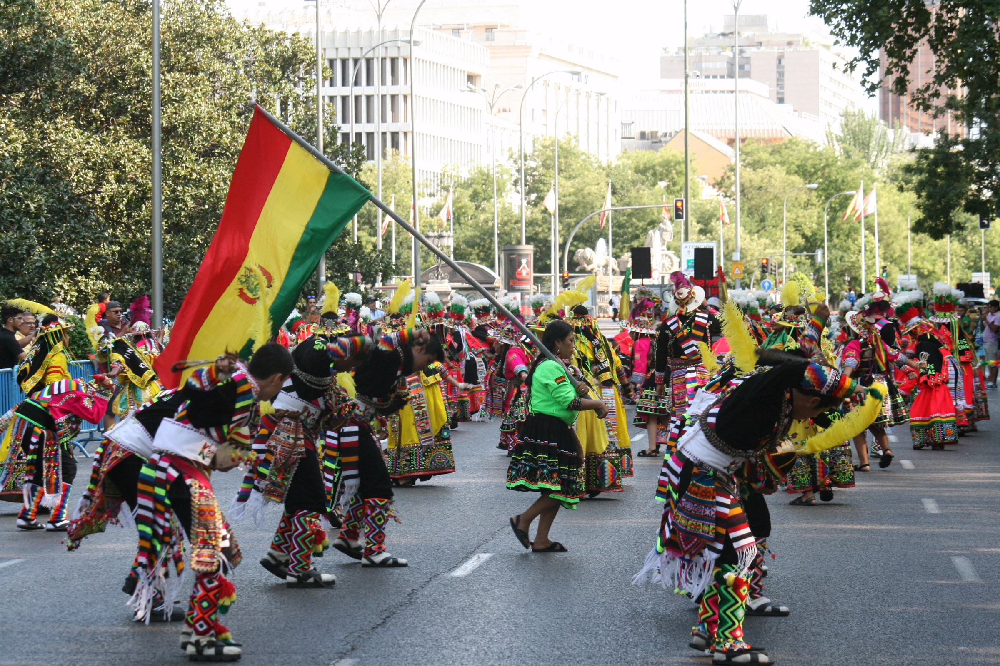
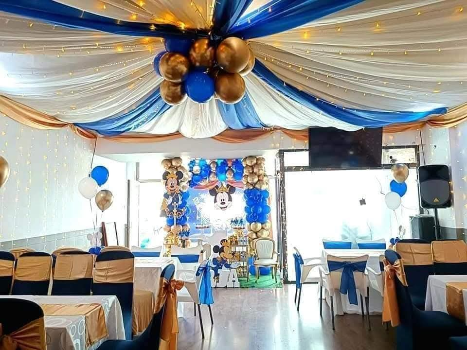
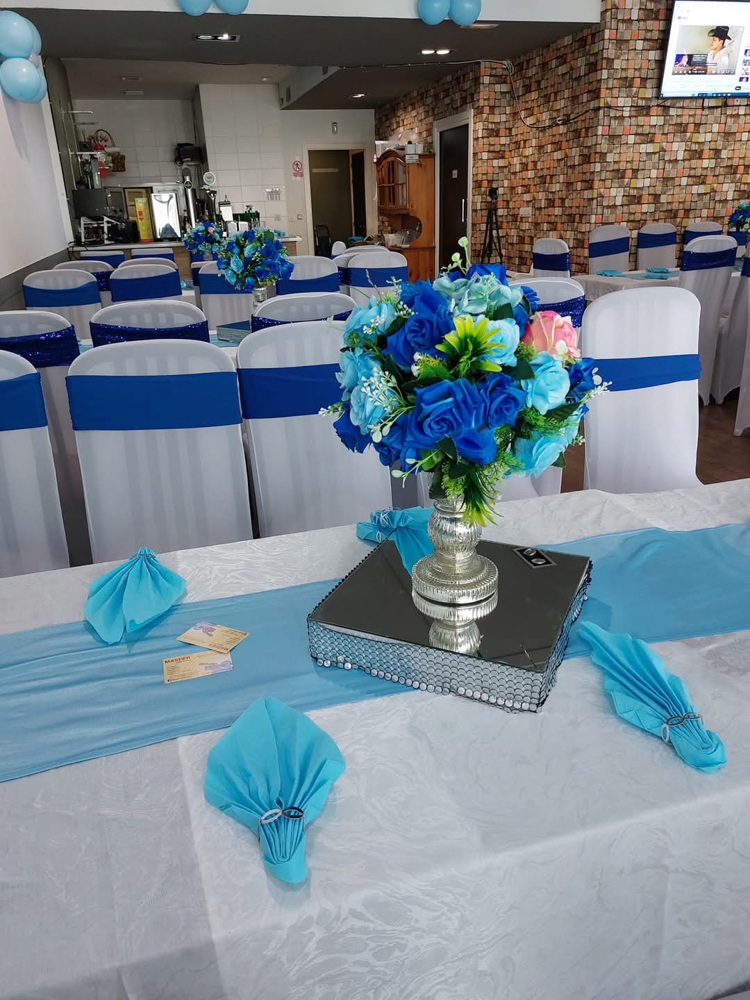
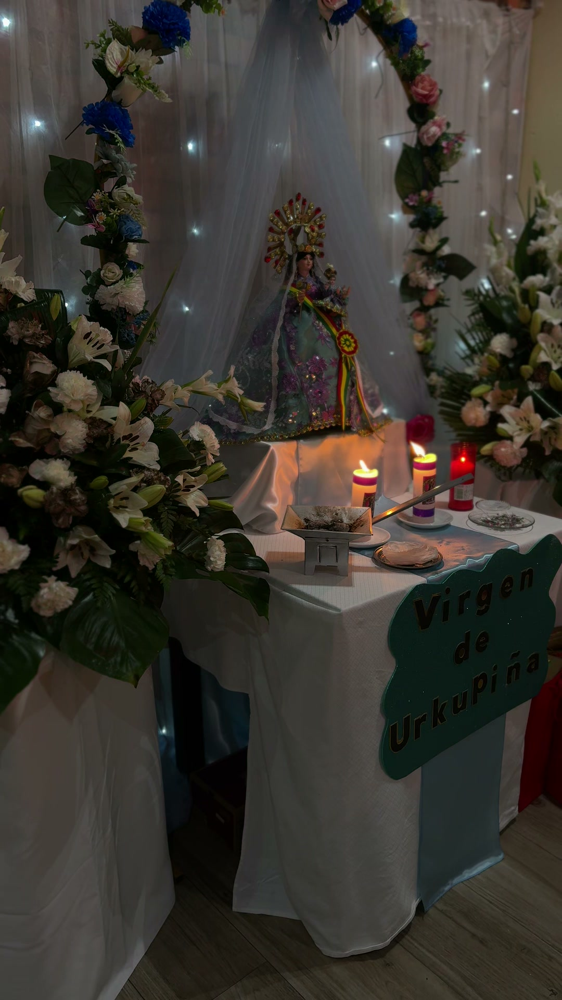

01 / CELEBRACIONES
LOS GRANDES MOMENTOS
Bodas.
Cuéntanos cómo imaginas ese día. Preparamos contigo una celebración cercana, con nuestra cocina y el ambiente del restaurante.
Preparar esta celebración
El AmanecerGASTRONOMÍA BOLIVIANA · DESDE 2020HAY SABORES QUE NOS REÚNEN.
Una mesa generosa. Nuestra cocina de siempre.
Y mil motivos para celebrar juntos.

LA TRADICIÓN SE SIRVE A LA MESA.
El sabor de un plato que reconoces. La conversación que se alarga. Las ganas de volver a reunirse.
En El Amanecer, la cocina boliviana y los encuentros van de la mano: del almuerzo de cada día a esa ocasión que merece una mesa especial.
Encuentra tu motivo para celebrar ↘01 / LA ESENCIA DE EL AMANECER
Cocina de raíces bolivianas.
Una mesa abierta en Leioa.
Platos para compartir, recetas que nos acompañan y un ambiente donde sentirse cerca. Así se vive El Amanecer, desde 2020.
Conoce nuestros sabores02 / LOS SABORES
La carta completa, de las entradas a los especiales.
También nuestras bebidas y panadería.
Consulta disponibilidad y alérgenos.
Prueba otro nombre o cambia de categoría.
Consulta disponibilidad, ingredientes y alérgenos con el restaurante.
03 / MOTIVOS PARA REUNIRSE
Bodas, cumpleaños y encuentros con los tuyos.
Descubre cómo celebrar en Restaurante El Amanecer.

LOS GRANDES MOMENTOS
Cuéntanos cómo imaginas ese día. Preparamos contigo una celebración cercana, con nuestra cocina y el ambiente del restaurante.
Preparar esta celebración
HOY TOCA CELEBRAR
Una mesa para tu gente y una ocasión para brindar. Consulta las opciones de comida y preparación del salón.
Preparar esta celebración
LA ALEGRÍA DE COMPARTIR
Almuerzos, reuniones y encuentros que merecen tiempo. Reúne a los tuyos alrededor de los sabores de casa.
Preparar esta celebración
CULTURA Y TRADICIÓN
Un lugar para reunirnos alrededor de nuestras tradiciones, compartir la mesa y celebrar lo que nos une.
Preparar esta celebraciónMOMENTOS DE EL AMANECER
La música, nuestras tradiciones y el sabor de casa.
LA MEJOR EXCUSA PARA VOLVER
04 / TU PRÓXIMO ENCUENTRO
Prepara una consulta para comer o celebrar con nosotros.
El restaurante te confirmará la disponibilidad al contactar.
05 / AQUÍ NOS ENCONTRAMOS
Av. Amaia, 2
Leioa · Bizkaia
Cerca del metro de Areeta.
Consulta disponibilidad antes de venir.
Festivos: horario habitual. Miércoles cerrado al público, también en festivo.